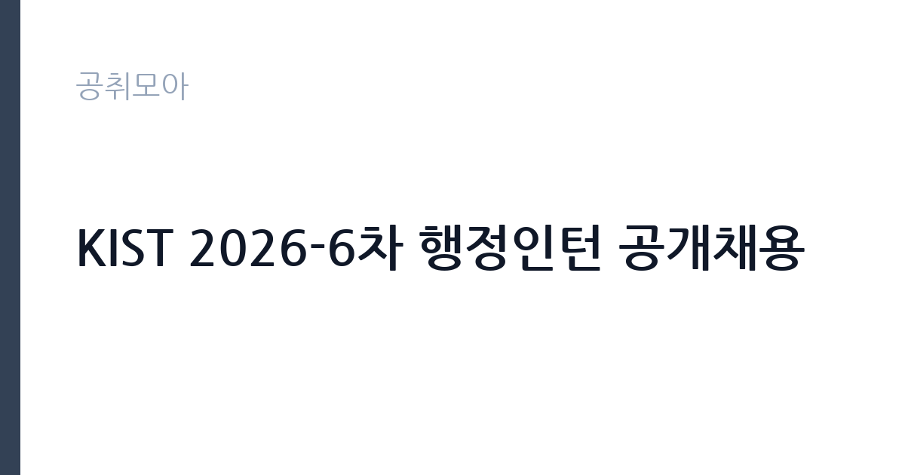

[공공기관] KIST 2026-6차 행정인턴 공개채용
한국과학기술연구원 · 서울 · 마감 2026-11-16 (D-14) · 출처 나라일터

한눈에 보는 모집 조건
| 기관 | 한국과학기술연구원 |
|---|---|
| 공고명 | KIST 2026-6차 행정인턴 공개채용 |
| 고용형태 | 연수/실습 |
| 근무지 | 서울 |
| 게시일 | 2026-11-02 |
| 마감일 | 2026-11-16 (D-14) |
지원자격, 이렇게 읽으세요
- 행정인턴 4명
- 접수 ~2026-11-16 마감
- 세부 조건은 원문 공고문 확인
연수·실습 과정은 교육과 현장 경험을 결합한 형태로, 정해진 기간 동안 실습생이나 연수생 신분으로 근무합니다. 실습비나 연수 수당이 지급되며 정규 채용과는 별개로 운영됩니다. 이번 공고는 한국과학기술연구원이 직접 진행하는 자체 전형입니다. 체험형 인턴은 청년, 장애인, 자립준비청년 같은 대상별 전형으로 나뉘는 경우가 많습니다. 본인이 어느 전형에 해당하는지 먼저 확인해야 하며 증빙 서류가 필수입니다. 재학생과 졸업생 지원 가능 여부, 연령 기준, 타 인턴 경험 제한 조항이 자주 붙습니다. 일부 기관은 인턴 근무 경력이 있으면 재지원을 제한합니다. 근무 기간과 인턴료, 수료 요건을 공고문에서 확인하십시오. 응시 자격 판단이 애매하면 접수 전에 채용 담당 부서로 문의하는 편이 안전합니다. 자격증은 유효 기간과 등록 상태를 확인해야 합니다. 갱신이 필요한 자격이라면 갱신 여부를 먼저 점검하십시오. 자격 취득 예정자는 채용 공고의 예정자 허용 조항을 먼저 확인해야 합니다. 조항이 없으면 지원 자체가 반려될 수 있습니다.
이 공고의 포인트
이 공고의 첫 번째 포인트는 고용 형태입니다. 교육과 현장 경험이 결합되어 있어 실무 감각을 빠르게 익힐 수 있습니다. 정규 채용과는 별개로 운영됩니다. 두 번째는 업무 범위가 명확하다는 점입니다. 체험형 인턴 직무로 채용되므로 배치 이후 담당 업무가 크게 흔들리지 않습니다. 세 번째는 근무지입니다. 서울 지역 근무로 접근성은 좋지만 그만큼 지원자가 몰리는 지역이므로 경쟁률을 넉넉히 잡아야 합니다. 채용 규모가 크지 않아 면접 비중이 높은 전형이 될 가능성이 있습니다. 같은 직무로 함께 올라온 공고 8건 가운데 마감이 중간에 위치하므로 다른 공고와 일정이 겹치는지 확인하십시오. 다만 선발 인원이 4명으로 많지 않아 자격을 갖춘 지원자가 몰리면 경쟁률이 높아질 수 있습니다.
전형은 어떻게 진행되나
서류전형과 면접전형 외에 직무수행능력 평가가 붙는 경우가 있습니다. 평가 방식은 공고문에 구체적으로 적혀 있으므로 어떤 항목에 배점이 높은지 먼저 파악하십시오. 면접에서는 지원 동기보다 실제 업무 경험에 대한 질문이 많고, 답변의 구체성이 평가를 가릅니다. 전형 일정은 서류 마감 이후 빠르게 진행되므로 연락 가능한 번호를 정확히 기재하고 문자와 메일을 수시로 확인해야 합니다. 최종 단계에서는 결격사유 조회와 신체검사가 진행됩니다. 동점자 처리 기준이 공고문에 명시되어 있으니 배점 항목을 미리 확인해 두십시오.
원문에서 확인한 전형 방식
○ 채용분야 : KIST 2026-6차 행정인턴 공개채용 ○ 선발직급 : 인턴 ○ 고용형태 : 기간제 ○ 접수기간 : 2026. 11.2.(월) 18:00 ~ 2026. 11. 16.(월) 18:00 ○ 응시방법 : 온라인 지원페이지를 통한 접수 ○ 담당부서(연락처) : 인사경영팀(02-958-6325) ※ 채용공고문과 직무기술서를 첨부하오니 확인 부탁드립니다.
이런 분께 추천해요
- 해당 전형의 지원 자격을 충족하는 분
- 짧은 기간에도 배우고 기여하려는 태도가 있는 분
- 기관 업무에 관심을 갖고 사전 조사를 해온 분
지원 전 체크리스트
- 응시자격 요건과 경력 기준을 충족하는가 — 경력은 증명서로 입증해야 합니다
- 연수 기간과 수당, 수료 조건을 확인했는가
- 제출서류 목록을 모두 준비했는가 — 누락 시 서류 단계에서 탈락합니다
- 접수 마감 2026-11-16 이전에 접수 방식을 확인해 제출했는가
모집 일정과 제출 타이밍
공고 게시일은 2026-11-02, 접수 마감은 2026-11-16입니다. 준비 기간은 약 14일로 서류 준비와 자격 증빙을 함께 처리하기에는 넉넉하지 않은 편입니다. 첫 이틀 안에 공고문과 첨부 서식을 내려받아 요건을 확인하고 남은 기간에 증빙 서류를 발급받는 일정이 현실적입니다. 면접은 서류 합격자 발표 후 짧은 간격으로 진행되는 경우가 많으므로 서류 제출과 동시에 면접 준비를 시작하는 편이 안전합니다. 마감일에는 접수 시스템이 몰리므로 하루 전까지 제출을 마치는 것이 좋습니다. 공휴일이 끼어 있으면 증명서 발급이 늦어질 수 있으니 발급 일정을 앞당기십시오.
직무 이해하기: 공공기관
연구·교육 지원 기관은 정책 연구와 조사 분석, 교육 프로그램 운영을 담당합니다. 과제 기반으로 인력을 채용하는 경우가 많아 계약 기간과 성과 목표가 명확히 정해집니다. 보고서와 연구 성과물의 품질 기준이 높습니다. 체험형 인턴은 정해진 기간 동안 실제 부서에 배치되어 업무를 보조하며 직무를 경험하는 자리입니다. 부서에 따라 문서 작성과 자료 정리, 데이터 입력, 행사 지원, 현장 업무 보조 등을 맡습니다. 인턴 기간 중에는 직무 교육과 멘토링이 제공되는 경우가 많고 결과 보고서를 제출해야 하는 프로그램도 있습니다. 근무 기간은 3개월에서 6개월이 일반적이며, 기관에 따라 채용 연계나 서류 가점 같은 혜택이 붙습니다. 이 직무는 담당 구역이 정해져 있어 근무지에 따라 실제 업무 환경이 달라집니다. 업무 매뉴얼과 지침이 문서로 정리되어 있어 절차를 익히면 반복 업무는 빠르게 손에 붙습니다.
자기소개서 작성 팁
인턴 지원서는 성장 가능성과 실행력을 보여주는 것이 핵심입니다. 부족한 경력을 감추기보다 배운 것을 빠르게 적용한 사례를 쓰십시오. 지원 기관의 사업을 조사해 구체적인 업무 아이디어를 제시하면 준비도가 드러납니다. 인턴 이후 어떤 직무로 성장하고 싶은지 방향을 밝히면 좋습니다. 문항별 글자 수 제한을 먼저 확인하고, 각 문항의 첫 문장에 결론을 배치하는 방식이 읽기 쉽습니다. 지원 동기는 기관의 어떤 사업에 기여하겠다는 한 문장으로 시작하고, 이어서 본인의 경험을 근거로 붙이십시오. 감점을 피하려면 다른 기관에 보낼 수 있는 범용 문장을 그대로 쓰지 않는 것이 중요합니다. 기관 이름과 사업명이 문장 안에 자연스럽게 들어가야 준비도가 드러납니다.
면접 준비 포인트
면접에서는 지원 동기와 배우려는 태도를 봅니다. 인턴 기간에 무엇을 얻고 싶은지 구체적으로 말할 수 있어야 하고, 학교나 아르바이트에서 맡았던 역할을 근거로 제시하면 좋습니다. 특정 업무만 하려는 인상을 주면 감점입니다. 기간이 짧다는 점을 인정하고 그 안에 무엇을 해낼 수 있는지 계획으로 답하십시오. 마지막 질문 시간에는 근무 조건에 대한 확인 사항을 한 가지 정도 준비해 가면 성실성이 드러납니다. 직무 특성상 체력이나 근무 시간에 대한 질문이 나올 수 있으므로 솔직하게 답하고 관리 계획을 함께 제시하십시오.
급여·근무조건 읽는 법
체험형 인턴의 보수는 기관이 정한 인턴료 기준을 따르며 월급 또는 일급 형태로 지급됩니다. 2026년 최저임금은 시급 10,320원, 월 환산 2,156,880원(209시간 기준)이므로 이보다 낮은 조건은 적용될 수 없습니다. 인턴료에 식대나 교통비가 포함되는지 별도로 지급되는지 확인해야 합니다. 4대 보험 가입 여부와 근무 기간도 함께 확인하십시오. 구체적인 금액은 공고문에서 확인할 수 있습니다. 다만 한국과학기술연구원의 보수 수치는 이 글에서 확인된 공시 자료가 없어 추정해 제시하지 않았습니다. 공고문 처우 항목과 첨부된 보수표를 기준으로 확인하십시오. 알리오 2025년 결산 공시 기준 공공기관 전체 일반정규직 1인당 평균보수는 7,376만 9천원, 신입사원 평균초임은 4,031만 6천원입니다(무기계약직 미포함). 2026년 적용 최저임금은 시급 10,320원, 월 환산 2,156,880원(주 40시간·209시간 기준)입니다. 고용노동부 고시 제2025-47호로 확정된 금액입니다. 공고문에 금액이 제시되지 않은 항목은 원문 보수표나 처우 설명에서 확인해야 하며 확인되지 않은 수치는 쓰지 않는 것이 원칙입니다. 비교할 때는 월 급여뿐 아니라 상여·명절휴가비·복지포인트·초과근무수당까지 포함한 연간 총액으로 계산하십시오. 기간제라면 계약 기간 동안의 총액을, 무기계약이라면 호봉 상승과 정년까지의 누적 소득을 기준으로 판단하는 편이 정확합니다.
자주 묻는 질문
- 선발 인원은 몇 명인가요?
공고문 기준 4명입니다. 직종별로 인원이 나뉘는 경우가 있으니 모집분야 항목을 함께 확인하십시오. - 근무지는 어디인가요?
서울 지역의 한국과학기술연구원 소속 근무지입니다. 세부 주소와 출퇴근 조건은 원문 공고문에서 확인할 수 있습니다. - 보수는 얼마인가요?
채용 신분(연수·실습)과 기관 임금 규정에 따라 정해지며 구체적인 금액은 공고문 처우 항목에 제시됩니다. 금액이 공개되지 않은 경우에는 원문의 보수표를 확인하십시오.
함께 보면 좋은 공고
[공공기관] 2026년 한국특허정보원 체험형 청년인턴 채용 — 마감 2026-11-18[공공기관] 한국폴리텍대학 진주캠퍼스 행정지원직(사무직원 휴직 대체인력) 채용 공고 — 마감 2026-11-10[공공기관] 대구경북첨단의료산업진흥재단 2026년 3차 정원외 계약직원 채용공 — 마감 2026-11-17출처: 나라일터 공개정보를 바탕으로 공취모아가 정리한 안내글입니다. 모집 조건·일정은 변경될 수 있으니 지원 전 반드시 원문 공고문을 확인하세요. 본 글은 정보 제공용이며 합격을 보장하지 않습니다.